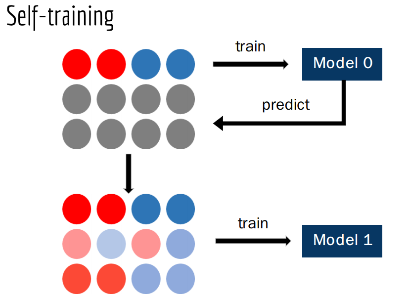

# Bonus: Semi-supervied Learning
Problem Description:
* Remove some label in training data as **unlabeled data**
* Implement semi-supervised learning algorithm such as self-training, clustering
* Compare the performance with the model using only the labeled training data, record the training procedure
## Lecture

## Reference:
→ http://speech.ee.ntu.edu.tw/~tlkagk/courses/ML_2016/Lecture/semi%20(v3).pdf
→ [More Semi-supervised Learning Tutorial](http://pages.cs.wisc.edu/~jerryzhu/pub/sslicml07.pdf)
→ [上學期 Machine Learning 作業三的說明](http://speech.ee.ntu.edu.tw/~tlkagk/courses/ML_2016/Lecture/ML%20HW3.pdf)